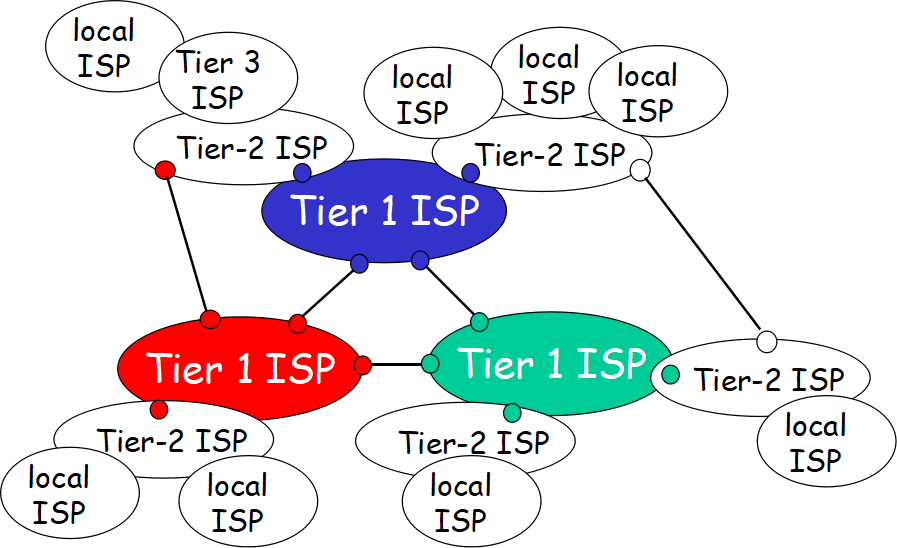

ComputerNetwork
计算机网络学习心得
第一章 计算机网络和因特网
关键术语
- 分组交换机(packet switch)
- 路由器(router)
- 链路层交换机(link-later switch)
- TCP协议(Transmission Control Protocol)
- IP协议(Internet Protocol)
- 接入网(access network)
- 分组丢失(丢包)(packet lost)
- 瓶颈链路(bottleneck link)
主要内容与问题
Access Network
- residential access(家庭接入)
DSL(Digital Subscriber Line)
deployment: telephone company
upstream: 1Mbps
downstream: 8Mbps
dedicated!HFC(Hybrid Fiber Coax)
deployment: TV company
upstream: 2Mbps
downstream: 30Mbps
shared
- company access(企业接入)
- Ethernet
- WiFi
- cable
- fiber
- radio
Network Core
- circuit switching
在发送方与接收方之间预留所需资源，可以防止阻塞与资源占用。链路中的电路是通过频分复用(Frequency-Division Multiplexing，FDM)或时分复用(Time-Division Multiplexing，TDM)来实现的。
- packet switching
端到端的时延:在源和目的地之间有N-1台路由器，故有N条路径，一个分组大小为L，传输速率都为R，所以端到端的时延=N*L/R
store-and-forward transmission机制，交换机刚开始收到一个分组的第一个比特的时候不能直接转发，要等整个分组都收到以后才能开始转发(报文message分成分组packet，分组再分成几部分发出)
丢包:输出链路被占用，要输出的分组就放入输出缓存，当输出缓存也被占满的时候，到达的分组或已经排队的分组之一将被丢弃。
无需预留资源网络层级结构
Delay, packet loss and throughput
- Four delays:
1.nodal processing delay
2.queuing delay
3.transmission delay(传输时延)
4.propagation delay(传播时延)
传输时延和传播时延的区别：传输时延(transmission delay)是路由器将分组从内部推出所需要的时间，与分组长度和链路传输速率有关，与路由器之间的距离无关。传播时延(propagation delay)是一个比特从一台路由器向另一台路由器传播所需要的时间，与路由器之间的距离有关，与分组长度和链路传播速率无关。
链路传输速率只是用来算路由器内部处理分组比特的，路由器之间传播分组比特的速率是由物理因素(光纤、双绞铜线)决定的！
- throughput:
吞吐量取决于最慢速度。如果只有一条数据流通，那吞吐量近似等于链路最小速率。但例如，有5台电脑通过一条链路下载东西，则吞吐量=min{服务器接入链路速率，客户接入链路速率，链路传输速率/5}。protocol layers, service models
top-down approach
- Internet Layers
- application
HTTP(web文档的请求与传送), SMTP(电子邮件报文的传输), FTP(端系统之间文件传送), DNS(域名系统)等等。
位于应用层的端系统与端系统之间交换信息的分组即为报文(message)。 - transport
TCP, UDP
运输层运输的是应用层的报文，所以位于运输层的分组称为报文段(segment)。 - network
IP protocol, routing protocol
网络层传输来自于运输层的报文段，位于网络层的分组称为数据报(datagram)。 - link
PPP(point-to-point protocol), Ethernet, WiFi, DOCSIS
链路层收到网络层的数据报，将该数据报分组发送给下一个结点，在下一个结点再上传回网络层。位于链路层的分组称为帧(frame)。 - physical
链路层是针对帧的，而物理层是针对帧的每一个比特。将每个比特一个一个的在结点中移动。
- Encapsulation(封装)
自顶向下包装，再自底向上解开包装实现端到端的数据移动。路由器识别网络层，链路层和物理层，但是交换机只识别链路层和物理层(所以交换机无法识别IP地址)
问题
路由器如何知道该将收到的分组发向哪条链路呢？
在因特网中每台路由器都有一个转发表，这些转发表可以将目的IP地址(或一部分地址)映射转换成输出链路。而这些转发表可以由路由选择协议(routing protocol)来自动配置。在存储转发机制中等待分组所有比特接收完毕的时间算作什么时延？
传输时延。Consider sending a packet from a source host to a destination host over a fixed route. List the delay components in the end-to-end delay. Which of these delays are constant and which are variable?
Nodal processing delay is variable.
Queuing delay is variable, because it depends on if there is a queue in route.
Transmission delay is variable. It depends on the size of packet.
Propagation delay is constant. Because the distance of two ends is constant.Suppose Host A wants to send a large file to Host B. The path from Host A to Host B has three links, of rates R1 = 500kbps, R2 = 2Mbps, and R3 = 1Mbps.
a. Assuming no other traffic in the network, what is the throughput for the file transfer?
Because of bottlenet link, the throughput = min{R1,R2,R3} = R1 = 500kbps.
b. Suppose the file is 4 million bytes. Dividing the file size by the throughput, roughly how long will it take to transfer the file to Host B?
time = 4000000/500000 = 8s
c. Repeat(a)and(b), but now with R2 reduced to 100 kbps
the throughput = 100 kbps
time_new = 4000000/100000 = 40sWhat are the five layers in the Internet protocol stack? What are the principal responsibilities of each of these layers?
application layer: send message to transport layer, eg: HTTP, FTP, DNS, SMTP
transport layer: send segment to network layer, recieve message from application, eg: TCP, UDP.
network layer: recieve segment from transport layer, send datagram to link layer. eg:IP protocol, routing protocol.
link layer: recieve datagram from network layer, send frame to physiccal layer. eg: PPP, Wi-Fi, Ehthernet, DOCSIS.
physical layer: recieve frame from link layer. Deal with bit of frame.Which layers in the Internet protocol stack does a router process? Which layers does a link-layer switch process? Which layers does a host process?
路由器处理物理层，链路层和网络层。交换机处理物理层和链路层。主机处理物理层，链路层，网络层，运输层和应用层。